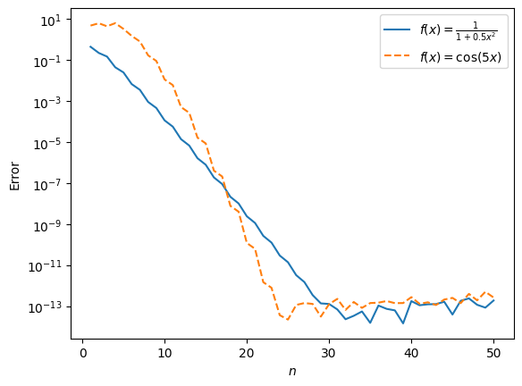
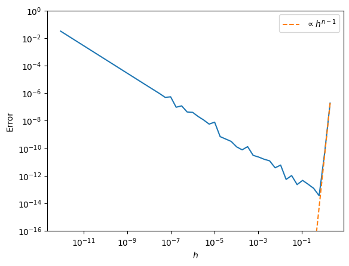

7. Ordinary differential equations II#
7.1 Recap#
Numerical libraries have plenty of methods for solving initial value problems, which they usually ask for in the standard form
i.e. as a system of first-order ODEs. They will require as inputs
the right-hand-side \(f(t, u)\),
the solution interval \([a, b]\),
and the initial state \(u_0\). Optionally, you can usually set
the relative and absolute tolerances of the method,
the order of the method (this determines the order of accuracy),
whether to interpolate the solution onto a dense grid (dense output),
and sometimes some special stopping conditions.
IVP solution methods are generally “marching” or “time-stepping” methods with 3 components,
A method to approximate / forecast the unknown \(u\) with,
A method to estimate the error of this approximation,
And a method that uses this error estimate to control parameters of the solver so as to keep the error below a user-specified tolerance.
7.2 Forecasting and (unit) local truncation error#
For describing the forecasting function of each method, we’ll use the following notation. The exact solution will be denoted \(u\), the numerical approximation of which is \(\tilde{u}\). The timesteps taken by the solver are \(\{t_i\}_{i=0}^{n}\), with the length of steps (not necessarily equal) being \(\{h_i\}_{i=0}^{n}\), where \(h_i = t_{i+1} - t_i\). The forecasting function is defined as
The simplest forecasting functions belong to the forward Euler method,
The IVP solvers usually control the error they accumulate during a single timestep, i.e. their local truncation error (LTE). This is defined as
i.e. it is the difference between the exact and the numerically predicted solution if one started the timestep from the exact solution. Its unit-length sibling is the ULTE,
One can anticipate the length of timesteps taken by the forward Euler method by considering how quickly its LTE converges as a function of \(h\). Expressing \(u(t_{i+1})\) as a Taylor series around \(t_{i-1}\), we see that the LTE is
so the ULTE is \(\mathcal{O}(h)\). So the method should converge, albeit slowly, for small enough \(h\) (though too small an \(h\) will usually lead to the amplification of roundoff error, i.e. conditioning issues).
Generally, there is no reliable way for an IVP solver to control the global error in the solution, as this depends too much on the problem itself. But under special conditions, the global error can be shown to be roughly a factor of \(h\) slower in converging to zero than the local error.
Theorem
Take an IVP solving method with constant stepsize \(h\). If its LTE satisfies
** Proof: ** Define the gloal error sequence \(\{\varepsilon\}_i\) as
There are several things we can deduce from the above expression:
convergence in the global error will be (at least) one order slower than in the local error,
as \(i \to \infty\), or, equivalently, \(t_i \to \infty\) (i.e. for long solution intervals), global error can accumulate exponentially,
however, the proof relies on uniform stepsizes, which generally won’t be true (we mostly use adaptive solvers).
Even though this proof works with uniform stepsizes, the conclusions generally hold. Let’s now look at some examples of how one would get \(\Delta \propto h^{p+1}\)-type local truncation error.
7.2 Runge–Kutta methods#
Most large numerical libraries will have a Runge–Kutta method as a default ODE (initial value problem) solver. These methods all work on the basis of matching the first given number of term’s in \(u\)’s Taylor expansion around the current timestep, for example, \(u(t_{i+1}) \approx u(t_i) + hu'(t_i) + \frac{1}{2}h^2 u''(t_i) + \mathcal{O}(h^3).\) Out of the RHS terms, \(u'\) is given thorugh the ODE itself: \(u'(t_i) = f(t_i, u(t_i))\). The next one contains \(u''\), which is a little trickier, since we have to keep in mind that \(f\) is in general a function of multiple variables (\(t\) and \(u\)), and so
The trick is to combine intermediate evaluations of \(f\), which if Taylor-expanded around \(t_i\), \(u(t_i)\), yield these terms as follows,
Now if we pick \(\alpha = \frac{h}{2}\) and \(\beta = \frac{h}{2}f(t_i, u(t_i))\), we see that
More generally, we can match even more terms in \(u\)’s Taylor expansion by making several intermediate \(f\)-evaluations. These intermediate evaluations constitute stages of a Runge–Kutta method. For \(s\) stages, the forecasting step can be summarized as (note that I’ll write \(u_i := u(t_i)\))
where the \(a_{ij}\), \(b_i\), and \(c_i\) are all parameters of the Runge–Kutta method. They are conventionally summarized in a Butcher tableau,
\(c_1\) |
\(a_{11}\) |
\(a_{12}\) |
\(\ldots\) |
\(a_{1s}\) |
|---|---|---|---|---|
\(c_2\) |
\(a_{21}\) |
\(\ddots\) |
\( \) |
\( \) |
\(\vdots\) |
\(\vdots\) |
\( \) |
\( \) |
\( \) |
\(c_s\) |
\(a_{s1}\) |
\( \) |
\( \) |
\(a_{ss}\) |
\( \) |
\(b_1\) |
\(\ldots\) |
\( \) |
\(b_s\) |
\( \) |
\(b_1^{\ast}\) |
\(\ldots\) |
\( \) |
\(b_s^{\ast}\) |
import matplotlib.pyplot as plt
import numpy as np
import scipy.integrate as si
def chebD(n):
"""
Computes the (n+1)x(n+1) spectral differentiation matrix\
using Chebyshev roots according to Ch 6 of Trefethen's\
"Spectral methods in MATLAB". Returns D and nodes on [-1, 1].
Note that they are ordered backwards, i.e. 1 to -1!
"""
if n == 0:
x = 1; D = 0; w = 0
else:
a = np.linspace(0.0, np.pi, n+1)
x = np.cos(a)
b = np.ones_like(x)
b[0] = 2; b[-1] = 2
d = np.ones_like(b)
d[1::2] = -1
c = b*d
X = np.outer(x, np.ones(n+1))
dX = X - X.T
D = np.outer(c, 1/c) / (dX + np.identity(n+1))
D = D - np.diag(D.sum(axis=1))
return D, x
f1 = lambda x: 1/(1 + 0.5*x**2) # This function has a pole near the interval [-1, 1]
df1 = lambda x: -x*f1(x)**2
f2 = lambda x: np.cos(5*x) # This function is entire
df2 = lambda x: -5*np.sin(5*x)
# Let's see how accuracy varies with n.
# We differentiate f1 and f2 on [-1, 1] and compare the numerically computed answer at the n+1
# Chebyshev roots with the analytic one. We plot the maximum error against n.
N = 50
ns = np.arange(1, N+1, 1, dtype = int)
errs1 = np.zeros(N); errs2 = np.zeros(N)
for i, n in enumerate(ns):
D, x = chebD(n)
df1_num = D @ f1(x); df2_num = D @ f2(x)
df1_ana = df1(x); df2_ana = df2(x)
errs1[i] = max(np.abs(df1_num - df1_ana))
errs2[i] = max(np.abs(df2_num - df2_ana))
plt.figure()
plt.semilogy(ns, errs1, label = "$f(x) = \\frac{1}{1 + 0.5x^2}$")
plt.semilogy(ns, errs2, '--', label = "$f(x) = \cos(5x)$")
plt.xlabel("$n$")
plt.ylabel("Error")
plt.legend()
plt.show()
<>:16: SyntaxWarning: invalid escape sequence '\c'
<>:16: SyntaxWarning: invalid escape sequence '\c'
/tmp/ipykernel_557882/3742093910.py:16: SyntaxWarning: invalid escape sequence '\c'
plt.semilogy(ns, errs2, '--', label = "$f(x) = \cos(5x)$")

# Now see how the interval width, h, affects accuracy.
H = 40
n = 16
hs = np.logspace(1, -H, num = N, base = 2)
errs = np.zeros(N)
D, x = chebD(n)
for i, h in enumerate(hs):
x_scaled = h*x/2 # We scale the nodes to be between [-h/2, h/2]
df1_num = 2/h*(D @ f1(x_scaled)) # Note the scaling of the derivative
df1_ana = df1(x_scaled)
errs[i] = max(np.abs((df1_num - df1_ana)))
plt.figure()
plt.loglog(hs, errs)
plt.loglog(hs, hs**(n-1)*errs[0]/hs[0]**(n-1), '--', label = "$\propto h^{n-1}$")
plt.xlabel("$h$"); plt.ylabel("Error"); plt.ylim(1e-16, 1e-0)
plt.legend()
plt.show()
<>:15: SyntaxWarning: invalid escape sequence '\p'
<>:15: SyntaxWarning: invalid escape sequence '\p'
/tmp/ipykernel_557882/3577818505.py:15: SyntaxWarning: invalid escape sequence '\p'
plt.loglog(hs, hs**(n-1)*errs[0]/hs[0]**(n-1), '--', label = "$\propto h^{n-1}$")

Question
What did we observe in the above:
What’s the convergence rate in terms of \(n\)?
How do you explain the initial quick convergence rate in \(h\) as it is reduced? What happens when \(h\) gets small, and why?
We clearly have exponential convergence in \(n\) for the function with the nearby pole, and an even faster rate for the function that is entire. Great! Note, however, that large \(D\)-s are ill-conditioned.
In terms of \(h\), we initially see the error drop sharply as \(h^{n-1}\). As the nodes get closer togeter with \(h\) shrinking, roundoff error slowly accumulates \(\propto h^m\), where \(m\) is the order of differentiation.
We now discretized our ODE as
This of course doesn’t have a unique solution until we encode the condition \(u(a) = u_0\).
Question
How do we do that?
The easiest way is to replace the first row of \(D\) with \([1 \; 0 \ldots 0]\), and the right-hand-side with the condition,
but we could have also appended a row (that, however, has the disadvantage of turning the system into a rectangular one, with fewer efficient numerical solvers available).
Question
Find the linear system encoding the following problems on \(t \in [-1, 1]\):
\( u' + a(t)u = 0 \), with \(u(-1) = u_0\),
\( u'' = f(t) \),
\( u'' + f(t)u = 0\), with \(u(-1) = u_0\) and \(u'(-1) = u'_0\).
Repeated differentiation can be done by the repeated application of \(D\), e.g. \(u'' = D^2 u\).
Neumann conditions are most easily added by appending the relevant row of \(D\) to the left-hand-side, e.g. \(u'(-1) = u'_0\) may be written as
Every good numerical method needs to measure its own error.
Question
Propose a way of measuring the error of the \((n+1)\)-node spectral solution of
The easiest way to estimate the error of a spectral method in practice is to increase the number of nodes and compare the answers. However, nodes may not fall on top of each other, in which case one has to resort to interpolation. In the special case of initial value problems, we can exploit the fact that \(\pm 1\) will always be nodes at any value of \(n\), and we may compare the answers at whichever node \(u\) is not given.
We are ready to code up a prototype of a spectral collocation method and compare its performance against a lower-order Runge-Kutta method.
Exercise
You’ll solve
a) First, write a function
f_ivp(t, u)that encodes this ODE as a system of first-order ODEs and returns the derivative of the vector of unknowns,u. It need not have a detailed docstring.b) Then define the initial conditions and solution interval. Call
scipy.integrate.solve_ivpor a similar method (that uses a default Runge–Kutta) to solve the IVP to about 6 digits of accuracy. Think about whether it makes sense to set a relative tolerance, an absolute tolerance, or both.c) Time the solution and print the result.
Now we’ll solve the IVP with a spectral method.
d) Write down the discretized version of the ODE, then the whole IVP (i.e., augmented with the initial conditions) using the differentiation matrix \(D\).
e) Using the
chebDfunction from your first quiz, write a functionsolve(n)that encodes the discretized ODE and initial conditions with (n+1)-node collocation, and solves the resulting (rectangular) linear system withnumpy’s (or MATLAB’s) least squares method. This function needs to have a nice docstring.f) Write a function
solve_spectral(tol)that takes in an absolute tolerancetol, and callssolve(n)with double thenon each iteration, until it either reachesn = 256or the solution \(u\) (the first element of the unknown vector) at the end of the solution interval until it converges to within the absolute tolerance. (Compare it to the solution from the previous iteration.)g) Time this method as well. Comment on how it compares to the Runge–Kutta method.